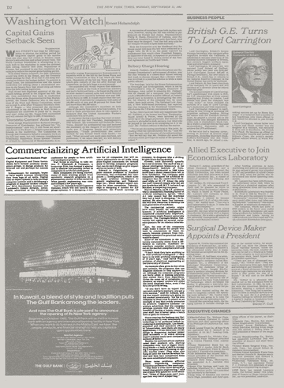

AI

You find many articles about preserving a program describing many simple ways it can be achieved. The only conclusion you can reach is that the programmer knows this and is keeping you in the dark. Keep this in mind.
That is unfortunate
Proceed